Teams: Having a Shambles Sheet
Ben: “In 1998 we were a rubbish team; by 2000 we were a good team. You’ve got to work on the team as much as you’ve got to work on the outcome.”
Chapter summary
If you want to build a strong team:
•Have a common goal that is measurable, relies on everyone and everyone wants to achieve.
•Agree how to behave around each other and MAKE THIS STICK.
How did the crew become a gold-medal winning team? They had:
1. A common goal which had three features:
1a.Mutual desire
1b.Mutual reliance
1c.Measurability
2.Agreed team behaviours that were:
2a.Developed by the crew
2b.Specific
2c.Constantly discussed
2d.Simple
2e.Understood and bought into by everyone
3.This chapter also looks at dealing with team challenges
3a.What do you do if someone is incompetent?
3b.What do you do if people aren’t committed?
3c.How do you give difficult feedback to each other?
3d.How do you get on with team members you don’t like?
3e.How do you deal with changes in team composition?
Team can be a horrible four letter word. Have you ever been in a dysfunctional team where productivity grinds to a halt? Even good teams can be hard work at times, team meetings can be duller than being stuck in a traffic jam with a broken stereo and have you ever had to put up with a team idiot?
Ben: “Team working can be a pain in the neck. Very often it’s much easier to do your own thing. In a team you often have to stop doing what you want to do to fit in with others. It means having to get on with people you don’t particularly like.”
So why bother?
Firstly because a team can achieve amazing things that no-one on their own could accomplish – as Wikipedia lovingly puts it, ‘No rugby player, no matter how talented, has ever won a game by playing alone.’
However much we might like to, we can’t implement that IT system or bring that new product to market singlehandedly. Being part of a team can also be a really good laugh.
Ben: “When you win as a team it’s brilliant. I remember watching the single scullers when they won and thinking they looked rather lame going ‘whoohay’ with no-one to celebrate with.”
Another advantage of being a team member is that we have a chance of winning even if we’re not the absolute best.
Ben: “To win in the pair you each have to be outstanding. To win in an eight you don’t individually have to be so good, I wasn’t good enough to be in the pair, but in the eight I could still win.”
In a team we can learn from others – copy their good habits and profit from their mistakes without having to go through the pain ourselves. We’ve also got a deeper pool of references and useful interpretations to draw on to strengthen our beliefs and bullshit filters.
How did the crew become a Gold-medal winning team?
So what made Ben and the crew into a team as opposed to a collection of individuals? How did they get from being a rubbish team in 1998 to a Gold medal winning one in 2000? Their strategies all boil down to two fundamentals:
1.Have a common goal
2.Agree how to behave around each other.
That’s it. No magic pixie dust, no conveniently compatible bunch of people, but some simple ingredients that any team, in any organisation, can put in place.
Section one: A common goal
Ben: “So many people say they are a team, but actually they just work with a bunch of folks, do their own thing and chat!”
The goal is what distinguishes a team from a random group of colleagues. The crew found that there were three elements to a really powerful team goal.
1a.Mutual desire
1b.Mutual reliance
1c.Measurability
An easy (albeit cheesy) way to remember the three Ms is to think about a mouth-watering goal; mmm!
1a.Mutual desire
Everyone wants the goal – why? Because it will benefit them personally. The benefits don’t have to be the same for each team member, but it is crucial that everyone needs to achieve this same goal in order to get their individual reward.
Ben: “The Gold medal meant different things to different people in the crew: pride, money, proving other people wrong, being the best – but we all wanted one really, really badly.”
Sales teams are a classic example of where this rule is often broken. Of course, sales directors want their salespeople to do whatever it takes to improve the company’s bottom line, but, so often, individuals are measured on individual sales and they don’t get any benefit if the team’s target is hit. We can encourage people to help colleagues with their homework, but it is daft to expect them to help if they don’t get any benefit out of it.
One man’s meat is another man’s poison – we need to make sure that everyone really does want to benefit and knows what that benefit looks like. Have you ever had a present you don’t really want? Your mum has gone to a lot of trouble to buy you that thermal vest, but it’s not quite you? It’s all too easy to assume that what motivates us will motivate other people. A simple way of figuring out what lights each person’s candle is to ask them. What excites each individual in your team? What constitutes a reward for them?
We worked with a retail team that had an Employee of the month scheme. One month the Chief Executive’s PA won the award. She got a public thank you speech from the boss, a bottle of champagne and her photo posted in reception. She was a quiet, shy person and her supposed reward – that was intended to make her feel special and valued – was her idea of pure hell.
1b. Mutual reliance
I’ve just worked with a team at a High Street shopping chain. Their goal was to open five stores in four months – something they’d never achieved before. The team was tired and scared, so we spent a bit of time nailing down ‘what’s in it for me’ for each member individually.
It was clear that the company would benefit from the stores opening on time, but how would person A in marketing benefit personally? Or person B in Finance? The answers were quite different. For some it was pride and satisfaction, for some it was an easier life – a smooth implementation would mean no working over the weekends, for others it was about hitting performance targets that would help them get promotion. Once everyone was clear on how they’d benefit you could see the gleam in everyone’s eyes and the conversation shifted towards how to achieve the goal.
Everyone in the team relies on each other to deliver the goal. There are no spare parts – everyone has a vital role to play. Everyone knows what is expected of them and of each other.
Ben: “They may not have been in the boat actually pulling the oars, but Shambles, [Chris Shambrook the psychologist] and Harry and Martin, the coaches, were crucial to making the boat go faster.”
Have you ever got hacked off because your colleagues don’t appreciate how much time it takes to do something?
I was on a project years ago to set up a call centre. The telecoms guy was breezily asked if he could pop a few more phones in than originally planned and the poor man pretty much spontaneously combusted. None of us had appreciated the complexity involved in setting up more capacity on the system.
It’s useful to have team conversations about what each person does and how it helps to achieve the team goal, so everyone has clarity about their contribution and respect for the work involved.
1c. Measurability
Fuzzy goals are when people say things like ‘I want to lose weight’ or ‘I want to get better at presentations’. The text book coaching response is to ask, ‘How will you know when you get there?’ Otherwise they are setting off on a running race without a finish line. If you keep on and on losing weight things will get silly and dangerous. On the other hand, ‘I want to weigh 10 stone’ or ‘I want to get an average score of at least 8/10 on my presentation feedback forms’ are examples of clear destinations.
Remember the layered goals we talked about in the goals chapter? If a team goal is measurable then it is super clear to everyone when they’ve achieved it. The crew broke Gold down into concrete goals about rhythm and power that they could measure day to day. If it isn’t obvious when goals are achieved and benefits materialise for everyone, people will lose momentum.
Sydney 2000 seemed a long way away in 1998, so the crew used milestones along the way – Regattas and ergo tests – to keep the goal tangible. What are the concrete outputs that show you and your team that you are on track?
Section two: Team behaviours
At the beginning of this chapter we said there were two things that got Ben and the crew from a rubbish team in 1998 to a great one in 2000 – a common goal and agreed ways of working. So far we’ve looked at the common goal, so let’s turn our attention to the team behaviours…
Every single team, every group has rules, it’s just that nine times out of ten they are unconscious ones that people have drifted into over time, rather than have actively agreed to.
Have you ever been on presentation skills training and been recorded on video? Did you watch the video and think, “I had no idea I did that! Look I keep wiggling my foot!” It is blindingly obvious to the audience, but when we are presenting ourselves we are so involved we simply don’t know we are doing it. In a similar vein, team rules create results and unhelpful rules operating underneath a team’s radar have negative effects.
After the disastrous ‘98 World Championships in Cologne, the crew’s sports psychologist encouraged the crew to agree some rules actively. How are we going to make progress to Gold as smooth and easy as possible? What is acceptable behaviour and what isn’t?
If ‘rules’ sounds dull or restrictive, then let’s call them team behaviours; team do’s and don’ts; team culture; team contract; team armadillos. It doesn’t matter what they’re called, as long as everyone signs up to agreed ways of working that will make our everyday boats go faster.
There were some interesting features of the crew’s rules that we would do well to follow:
2a.They were developed by the crew
2b.They were specific
2c.They were constantly discussed
2d.They were simple
2e.Everyone understood them
2a.Developed by the crew
Chris got the crew to develop the rules themselves. Everyone was involved in generating ideas and discussing them. The crew made it their job to know themselves and each other extremely well.
•They knew each other’s technical strengths and weaknesses
•They knew their temperament, their bad habits, what made them angry, what motivated them
•They learnt how to flex their approach to get the best out of each individual
•They learnt what rules would maximise performance
The golden rules were there to guarantee that everyone behaved in the ways that mattered and if they didn’t they’d get pulled up.
Have a look at the crew’s Code of Conduct for the Olympic Village and the Olympic lake on page 136. It includes things like:
•Keep the bullshit filters on high
•Limit the amount of talking bollocks to Basil
A lot of the rules would make little or no sense to an outsider, because they are phrased in the crew’s language. The rules also reflected the type of personalities involved – a group of lads in their mid twenties – hence rules such as ‘keep the in-crew piss taking under control.’
Ben: “I’ve been lucky enough to work with a senior manager at HSBC who is known for turning around regional areas within the bank. He’s taken areas that are the worst performers and helped them get into the top five in the country. One of the first things he does is to get all the managers together and get them to agree what they want to achieve and how to do it. I think he has one rule that he imposes on the managers, which is that you’re not allowed to be a ‘Mood Hoover’, but beyond that, it’s up to the managers. There might be 200 managers in the area so he literally gets them all in one room to figure it all out. They consistently decide that they want to be in the top five in their region and they consistently achieve it.”
How can you involve all your team members in developing your team behaviours? By ensuring everyone actively signs up, you’re massively increasing the chances of everyone sticking to them.
2b. Specific
When you ask Ben what was important to the crew, or what their culture was, he comes up with a long list:
•Learning
•Process
•Openness
•Being tough on themselves and each other
•Performance
•Being driven
•Being passionate
•Continuous Improvement
It’s a meaty list and impressive, but how on earth do you measure it or make it stick? You need to go down to the next level of detail and create practical rules that you can apply to everyday situations.
For example, the crew talked time and time again about what separation meant. It was a common term in rowing, but it meant slightly different things to different people. The crew got very specific that to them it meant separating the elements of the stroke, so they would get the arm straight then move the body then move the legs – even when they were doing forty strokes a minute.
What happens if we have rules inflicted on us though? What do we do then?
In the ‘90’s my first graduate job was working as a management consultant for Ernst and Young. It was a massive organisation employing 85,000 people globally and we had a set list of corporate goals and values we were expected to follow. My manager got us to discuss what the values meant for us – what was their relevance, how could they help us and inform the way we worked together. It turned an abstract bit of paper on a wall into real life agreed ways of behaving around each other.
The British rowing eight generated new, specific rules for the Olympic Games – the Code of Conduct on page 136 – because they decided it was sufficiently different from other Regattas and training camps. Some were practical rules to help with the scale and complexity of the Olympic Village, such as Go to the food hall as a crew. Have a set location in the food hall. Some were psychological ones to cope with the extraordinary pressure, such as Expect the unexpected – you can deal with it.
What specific events do you face that would benefit from specific rules?
2c. The rules were constantly discussed
Ben: “Don’t expect things to be perfect. If the rules get broken, that’s OK. Demand high standards, but don’t beat yourself up or lose hope if the high standards aren’t met.”
When the British Olympic Association moved offices, a working party put together some rules about working in an open plan office – in the old building people had been used to having their own offices. The list of open-plan rules was pre-framed as a first crack, something that needed to be reviewed.
You need to start somewhere, plot your course, look for opportunities to measure whatever you’ve put down as rules, only then can you appreciate whether you are on or off course and take steps to improve.
Ben: “Talk and talk and talk and talk and talk. It is easy to assume that people know what you mean, what you are after and what’s acceptable.”
The crew talked endlessly about their rules – on the water, off the water, before, during and after training sessions. Each of these conversations was a team building exercise in itself – the communication made the crew stronger. If a rule wasn’t helping them progress towards Gold they would throw it away and find one that did.
Each person found some rules easy and some hard – and they were all different, which provided an ideal opportunity to learn from each other and gather support. The constant discussions helped them figure out who was succeeding and what strategies they were using that the others could copy.
Ben: “Rules are a really, really good starting point for building a team. It’s not about achieving common ground, it’s not about the lowest common denominator, it’s all about working towards the best possible outcome.”
2d. Keep it simple
It seems really obvious to keep it simple, but it’s easy to get carried away when developing team rules. It’s a bit like impulse shopping… “Ooh, what about being nice to each other, that sounds lovely? Shall we do that too?” Remember that the rules are only there to help us achieve our goal, so stick solely to the essentials. Having too many rules can muddy the water and people get distracted worrying about which rule takes precedence over which others. By revisiting the rules time and time again the crew made them simpler and simpler until they eventually threw away the list of rules and stuck to that one golden question:
“Will it make the boat go faster?”
2e.Everyone understood them and bought into them
This feature was a function of the others. In other words the crew understood the rules and bought into them because they were simple, specific and the crew themselves had developed them. ‘If it will make the boat go faster then of course I’m up for it.’ Because the crew talked about the rules on a daily basis they kept checking that every crew member had the same understanding about what was required. They could calibrate if anyone was lacking buy-in and agree how to strengthen commitment and performance.
Section three: Dealing with team challenges
We’ve looked at the common goal and we’ve looked at the team behaviours. We’ll round off this chapter by looking at team challenges. What might throw a high performing team out of sync, or prevent a good team from becoming an exceptional one? Here are some examples of typical issues that corporate teams come to us for advice about, and some ideas from the British crew’s experience which help to tackle them:
3a.What do you do if someone is incompetent?
3b.What do you do if people aren’t commiteed?
3c.How do you give difficult feedback to each other?
3d.How do you get on with team members you don’t like?
3e.How do you deal with changes in team composition?
3a. What do you do if someone is incompetent?
The bottom line is to quit the team ourselves or exit the underperformer. But we need to think before we pull the emergency cord:
If it is genuinely a competence issue, then training, coaching and feedback are useful tools, and for these to work we need to get more specific.
Ben: “Figure out how to help them get better. To say “they are crap” is a massive generalisation. Work out what they are good and bad at and take it from there.”
For example, one of the guys in the crew wasn’t great at looking after himself. He ate badly, he got ill, and that had a big impact on team performance. The crew supported and nagged him to sort this out.
I coached someone recently who had a team member who just wasn’t delivering. It turned out to be a simple misunderstanding about what ‘producing a draft presentation in time for the month end review’ meant. The issue wasn’t performance, it was lack of clarity about what needed to go in the draft and when it needed to land on his manager’s desk.
Ben: “Deal with the behaviour, not the person. Be clear on whether it’s important that they are good at the task in question. It might be better to leave them alone and get someone else in the team to do it.”
Another avenue worth exploring is whether team members aren’t giving the required contribution because they can’t or because they aren’t motivated to. If they aren’t pulling their weight because they can’t be bothered, then start with their commitment:
3b. What do you do if people aren’t committed?
The term commitment is a slippery eel. What exactly does it mean? Have you ever meant to go and buy someone a birthday card, but never quite got round to it? “Family is really important to me,” we tell ourselves, “I’ve just been too busy to pop to the shops.” Our mum with the card-shaped gap on the mantelpiece doesn’t see it quite the same way.
We tend to judge our own commitment levels by our intentions and feelings, but we judge other people’s commitment levels by their behaviours. So make it a level playing field by formulating team rules which clearly explain what people need to do or say to prove they have commitment.
Ben: “I was committed to winning at Barcelona in 1992, but the third time I arrived for morning training still wearing my clothes from a party the night before I nearly had my head taken off by guys who’d been training for four years.”
The British eight defined commitment very clearly – it meant turning up to training in a fit state; it meant doing a full chin up in training; it meant not talking bollocks to Basil.
If someone doesn’t seem sufficiently on board then consider what is driving the lack of commitment.
•Is the problem that it seems like too long a haul? Then the answer might be to put clear milestones in place.
•Is the issue that they can’t see a compelling benefit? If so then what would light their candle? Pride? Acknowledgement? Promotion?
Time and again research shows that what interests people to perform above and beyond average performance is not money, but what the psychologist Herzberg called motivators – things like recognition, interesting work, feeling part of the ‘in’ crowd…
Ben did some work recently for a client who deals in car parts. The Sales Director described it as deeply unglamorous! There’s no Gold medal, nothing more than a pay cheque, but his aim was for people to be down the pub at the end of a day’s work going, “I like my job, it’s a bit of a laugh…my boss is a good guy.”
3c. How do you give difficult feedback to each other?
Ben: “The crucial thing is to know that feedback is just information. Everyone has the right to choose what they do with it. The other thing is to see feedback as being really valuable. Why would you not want to know something that might make the boat go faster? Our view was that if you see something wrong in a session at the start of the day tell me now so I can make the sessions the best they can be as quickly as possible.”
Feedback is easier if you have mutual permission to give and receive it. The more you do it, the easier it gets. The crew actively sought feedback out from each other as well as being ready to give it.
Ben “There weren’t really any massive things we had feedback on, because we did it continually, so the issues never grew that big.”
Start with simple topics. It’s easier to feedback on technical, task-related things. It’s harder when the issue is someone’s way of working.
If we are giving feedback, we need to be mindful of the state the receiver is in. What can we do to make it easier for them to listen and take on board what we are saying? When we are on the receiving end, we need to remember that even when the feedback is about personal style, it’s still not a reflection of our identity, our very being. Never confuse feedback for a fact about who we are, it’s just an opinion.
The crews used their famous team debrief sessions to give each other feedback. Building in a recognised time and place for feedback is a useful way of making it a team habit. A really simple formula that we’ve seen work well with corporate teams is to encourage the phrases I like and I’d prefer in team discussions. E.g. “I like it when you give me deadlines that are longer than a week,“ and “I’d prefer it if you asked my opinion before raising the issue with our manager.”
3d. How do you get on with team members you don’t like?
There were plenty of frictions in the eight. Ben tried to punch Andrew, Stevie and Martin didn’t always get on, Kieran and Louis had differences, Rowley and Luka didn’t speak to each other for a week or so. It is undeniably tough to spend hours a day, week in week out with someone you don’t like – especially in a boat that is just two feet wide.
Ben: “When things got fractious we used “don’t talk bollocks to Basil” (see the bullshit filters chapter) on each other. If we need to talk about rowing and making the boat go faster then absolutely talk to me, but not about anything else that’s not relevant. Stevie had challenges with Martin, but recognised he was an excellent coach, so he focused on that. When Luka and Rowley had a bust up in the last weeks before the Olympics and didn’t speak to each other for days someone or something made them think, “Is this making the boat go faster? No, so we need to change.”
When you’re in a working environment there’s no rule that says you must like everyone who is in your team. However, you do need to have respect for their ability to do the job. Likeability and competence are not the same thing.
3e.How do you deal with changes in team composition?
The daily conversations which took nothing for granted (remember the constant definition of separation), helped new members to understand and buy into the rules very quickly.
Ben: “Assume they – and you – know nothing. Take as much time as necessary to get a common understanding.”
When there are changes in the team – or in the project, for that matter – discussion is essential. New team members need to understand where you’re up to; what the team ‘modus operandi’ is, so they follow the same way of working and fit in quicker. Also a discussion will help the team to understand the incoming team member and what they bring to the team.
Conclusion
A high performing team can achieve astonishing results. In order to do that it needs two things:
1.A “mmm” goal (measurable, mutual benefit, mutual desire) to work towards
2.Agreed team behaviours which describe what everyone needs to do and say to make the goal a reality.
A compelling goal draws a team irresistibly forwards. It minimises wasted effort and maximises motivation. The team rules make it crystal clear what is acceptable and what is unacceptable behaviour. If the rules are developed by the team members themselves they create massive buy-in and are more likely to become self-policing. This lessens the chances of emotional slanging matches and increases the chances of grown up conversations which will make the boat go faster.
The next question is how does a high-performing team focus their attention day in day out to maximise their chances of winning? The next chapter is all about the crew’s process driven approach…
You can sign up for our free e-course to get you started on using the strategies we wrote about in this chapter, you will also find crib sheets, downloads and other free resources at www.MyCrazygoal.com/Book-Resources
For more Olympic photos of Ben and the crew go to the ‘Library’ page at www.willitmaketheboatgofaster.com
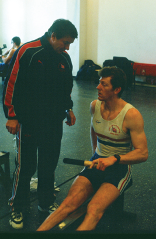
December 1999. Jurgen giving me feed back on an ergo session in Sierra Nevada, Spain.
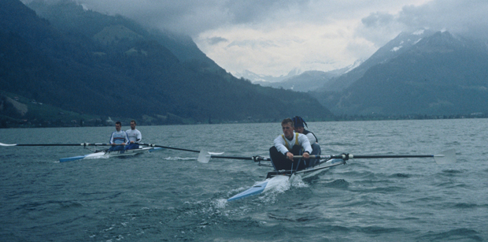
March 2000. Simon and I training along side Fred and Steve Williams in Sarnen, Switzerland
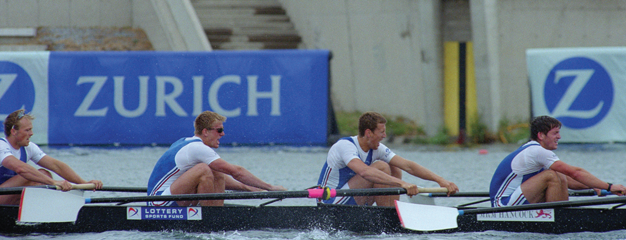
June 2000, Vienna Regatta. Crossing the line for our first win.
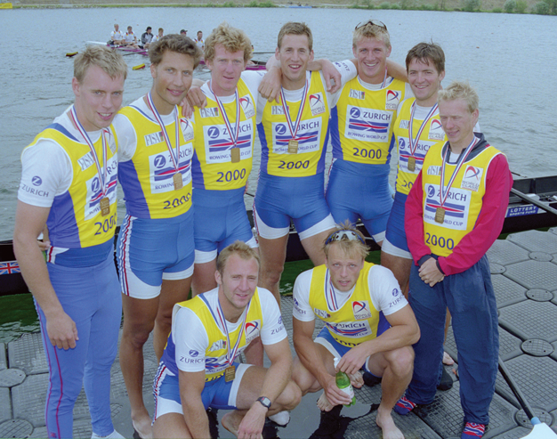
June 2000 Vienna Regatta. Our first gold medals, before our bollocking. From right to left Steve, Luka, me, Kieran, Simon, Andrew, Rowley, front row, Bob and Louis.
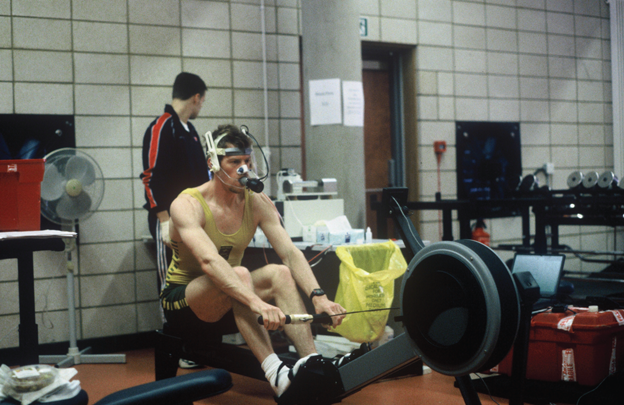
Spring 2000. Steve Ingham monitoring physiological tests
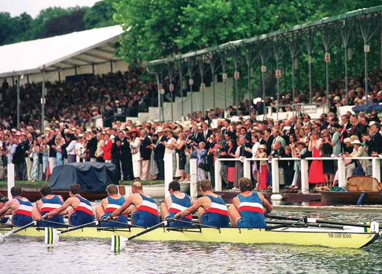
July 2000, Henley Royal Regatta. The Australians winning at Henley, Britain is no where to be seen.
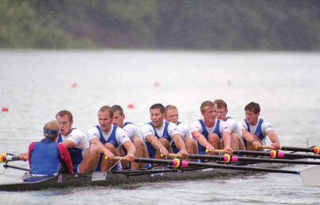
July 2000, Lucerne Regatta. Training in the rain before Louis did his back in.
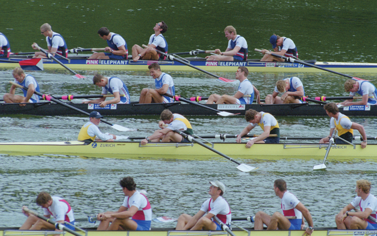
July 2000, Lucerne Regatta. (GB in the black boat) We’ve just won but are too tired to celebrate.
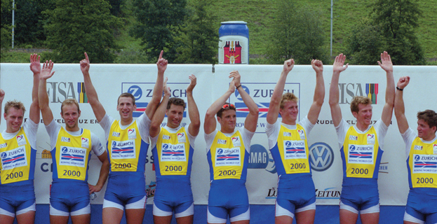
July 2000, Lucerne Regatta. We’ve recovered to receive our World Cup winners vests. Rowley is off the to the left, Steve, Fred, Kieran, Luka, James Cracknell, Simon, me, Andrew.
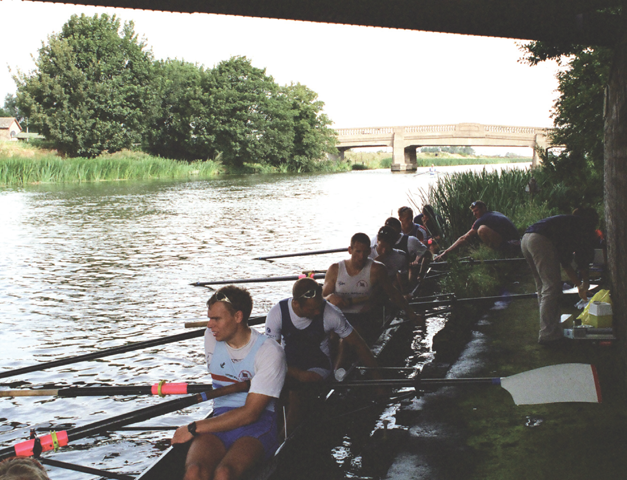
August 2000. Physiological testing on training camp in Ely.
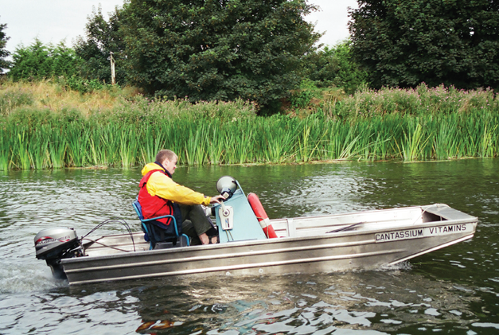
August 2000. Martin at his desk in Ely.
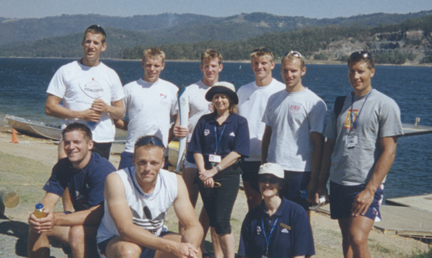
September 2000, the Hinze damn, Australia. The crew and a couple of the volunteers who were looking after us at the lake.
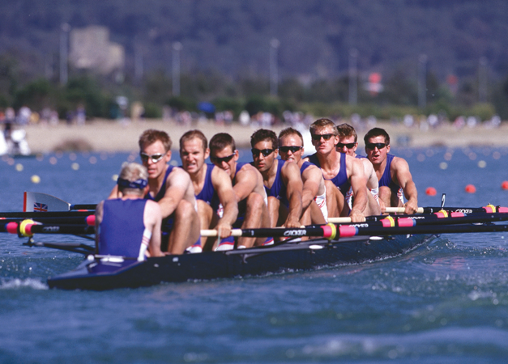
September 2000. Blasting off the start in the Rep.
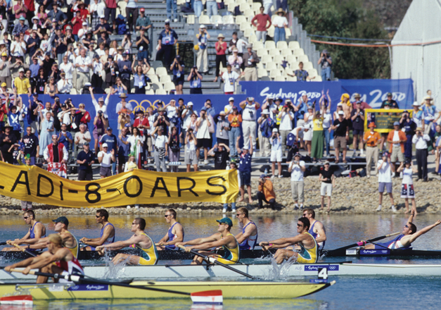
September 2000. Andrew crossing the line.
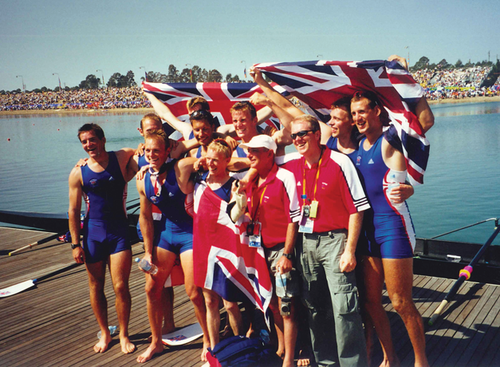
September 2000. Posing for the press with Harry on the left and Martin on the right.
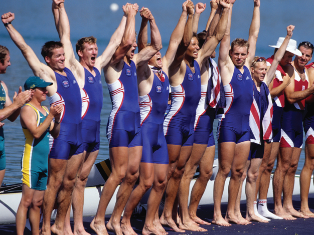
September 2000. “The Olympic Champions are Great Britain.”
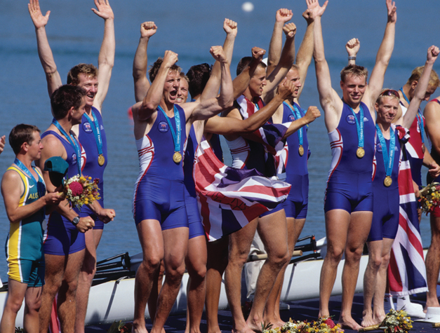
September 2000. Celebrating what we’d dreamed of for so long.
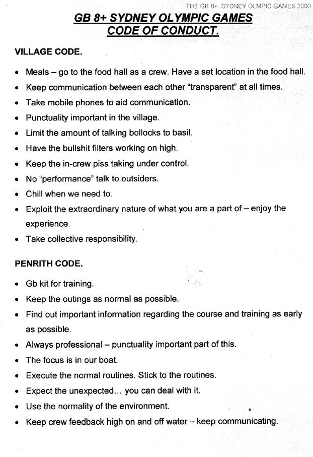
An example of agreed team behaviours, as referred to in chapter 6.